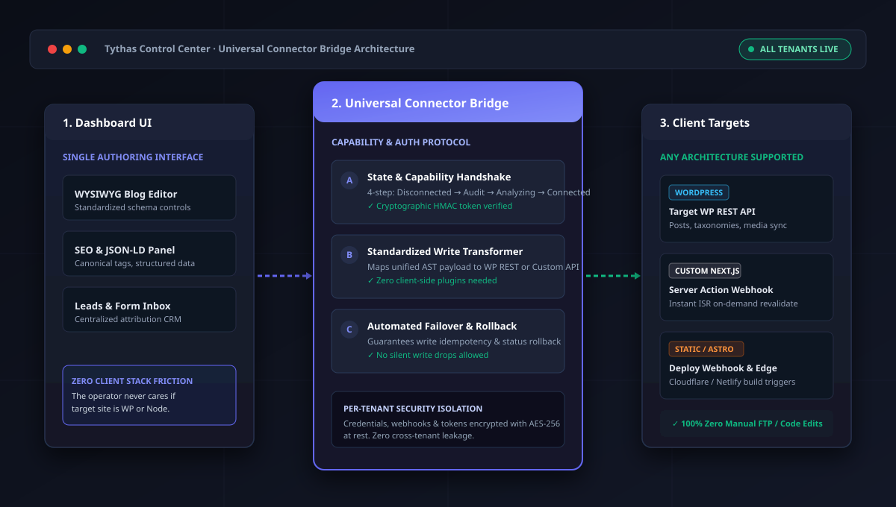

Decision 01
Universal Connector Bridge vs. Bespoke Client Plugins
What I chose and why
Engineered a universal decoupled connector bridge. Abstracted WordPress REST APIs and Next.js server webhooks behind a single capability layer so operators never need to know the underlying stack.

1
Unified Dashboard Surface
One consistent authoring UI regardless of target CMS or custom framework.
2
Decoupled Capability Handshake
Verifies read/write permissions before unlocking any publishing controls.
3
Multi-Stack Client Targets
Directly bridges to WordPress, Next.js, and static webhooks without client plugins.